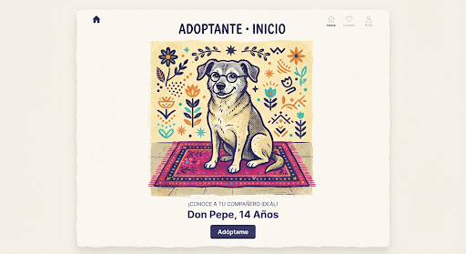
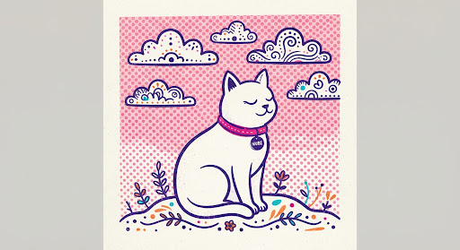
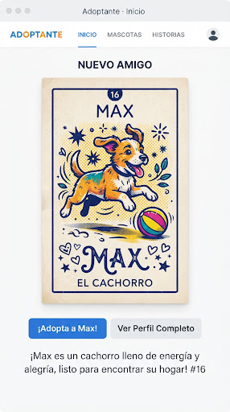
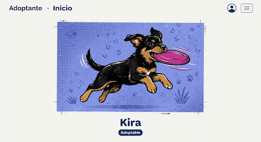

Luna
#01 DE LA BARAJAPerrita de 2 años · Tulancingo Centro, Hgo.
«Sale de noche y de día, pasea en tu compañía.»

Rocky, El Abuelo
10 años«Abuelito y bonachón, pide cama y un rincón.»
Rocky es tranquilo, amoroso y perfecto para un hogar pacífico. Está esterilizado, vacunado y listo para dar el mejor cariño agradecido de la vida.
Más cartas para ti
Nuevos rescates en la región de Tulancingo listos para una familia

«Blanca, suave y muy ligera, se acurruca donde quiera.»

«El que corre y no se cansa, rey del patio y de la casa.»

«Pequeña pero muy lista, a la primera te conquista.»